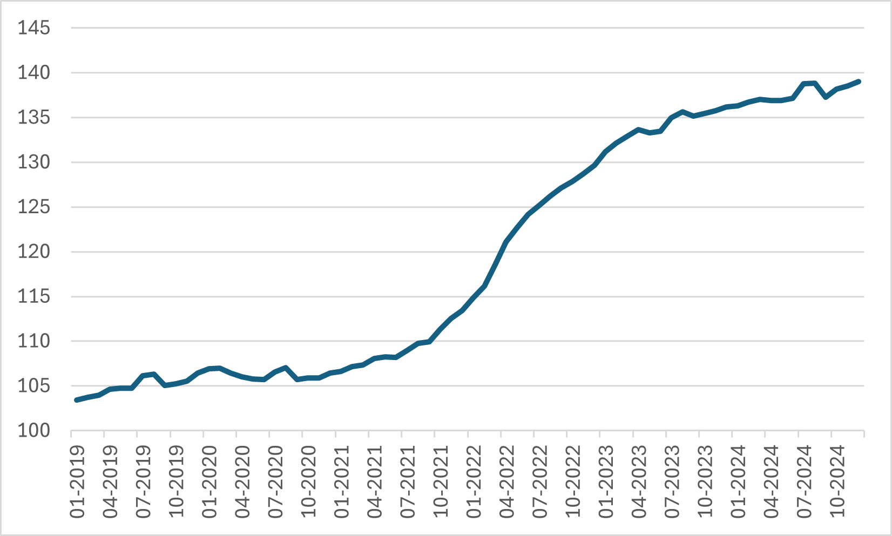
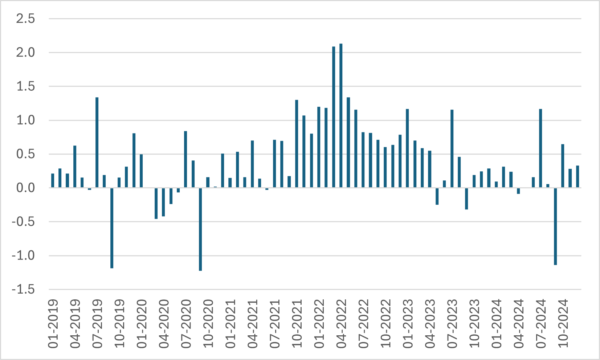
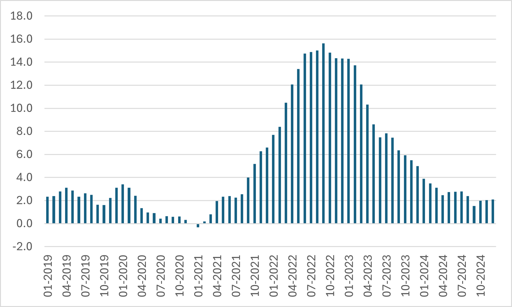
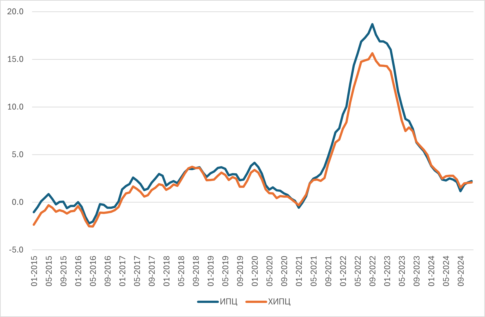

Ценови индекси и инфлация#
Изчисляване на инфлацията от зададен индекс#
Exercise 24
От данните в таблицата по-долу изчислете:
Инфлация спрямо период 1 (натрупана инфлация)
Инфлация спрямо предходния период
Период |
ИПЦ |
|---|---|
1 |
100.0 |
2 |
102.0 |
3 |
105.1 |
4 |
115.6 |
Решение
В случая натрупаната инфлация спрямо период 1 може да бъде взета директно от индекса, тъй като базата е също период 1. За период 2 имаме:
Аналогично за период 3 и 4 получаваме \(5.1\%\) и \(15.6\%\).
Инафлацията спрямо предходния период е както следва:
Период 2: \(102.0/100.0-1 = 2\%\)
Период 3: \(105.1/102.0-1 = 3\%\)
Период 4: \(115.6/105.1-1 = 10\%\)
Exercise 25
От данните в таблицата по-долу изчислете:
Инфлация спрямо период 1 (натрупана инфлация)
Инфлация спрямо предходния период
Период |
ИПЦ |
|---|---|
1 |
230.0 |
2 |
232.3 |
3 |
227.7 |
4 |
239.0 |
Exercise 26
Попълнете липсващите стойности в таблицата по-долу:
Период |
ИПЦ |
Инфлация, натрупана |
Инфлация, спрямо предх. период |
|---|---|---|---|
1 |
__ |
- |
- |
2 |
30.8 |
__ |
2.5% |
3 |
31.8 |
6.1% |
__ |
Example 7 (Инфлационни процеси в България, 2018-2024)
ХИПЦ, 2015=100 
Инфлация според ХИПЦ, предходният месец = 100 
Инфлация според ХИПЦ, същият месец на предходната година = 100 
Example 8 (Разлики между ИПЦ и ХИПЦ за България)
Инфлация според ИПЦ и ХИПЦ, същият месец на предходната година = 100 
Конструиране на ценови индекс от зададени компоненти#
Exercise 27
Разглеждаме потребителска кошница, съставена от две стоки, хляб и облекло, с тегла съответно 60% за хляба и 40% за облеклото. Таблицата по-долу задава цените на стоките за два периода, \( t=1,2 \). Пресметнете индекса на потребителските цени за период 2 спрямо период 1.
Период |
Хляб |
Облекло |
|---|---|---|
1 |
2 |
120 |
2 |
4 |
150 |
Решение
Индексът на цената на хляба е \(4/2 = 2\).
Индексът на цената на облеклото е \(150/120 = 1.25\)
Общият индекс е \(0.6 \times 2 + 0.4 \times 1.25 = 1.7\) или, след стадартното прескалиране с умножаване по 100, имаме индекс \(170\) за период 2 спрямо период 1.
Exercise 28
Като използвате данните от дадената таблица и тегла от 30% и 70% съответно за стоки 1 и 2, изчислете инфлацията за 2025 г.
Година |
Стока 1 |
Стока 2 |
|---|---|---|
2024 |
20 |
50 |
2025 |
25 |
60 |
Exercise 29
Като използвате данните от таблицата по-долу и имате предвид, че общият ценови индекс за период 2 при база период 1 е 120, изчислете теглата на стоки 1 и 2 в потребителската кошница.
Период |
Стока 1 |
Стока 2 |
|---|---|---|
1 |
180 |
320 |
2 |
200 |
400 |
Средна инфлация#
Exercise 30
Дадена е следната информация за ИПЦ при фиксирана база по тримесечия за две години:
Тримесечие |
ИПЦ, година 1 |
ИПЦ, година 2 |
|---|---|---|
1 |
110.0 |
118.5 |
2 |
112.2 |
120.2 |
3 |
115.6 |
122.7 |
4 |
116.7 |
123.3 |
Изчислете натрупаната инфлация между 1-вото тримесечие на година 1 и четвъртото тримесечие на година 2.
Изчислете индексите за година 2 при база съответното тримесечие на предходната година.
Изчислете средната инфлация за втората година, като използвате аритметична средна на конструираните индекси при база съответното тримесечие на предходната година.
Решение
Натрупаната инфлация е \(123.3/110.0-1 = 12.1\%\)
За индексите имаме съответно
На тази основа имаме усреднен индекс
т.е. средната инфлация е \(6.7\%\).
Exercise 31
Като използвате данните от Exercise 30, изчислете средната инфлация като съотношение на аритметичните средни на индексите от таблицата за първата втората и година.
Решение
Имаме
Note
От решението на Exercise 31 е ясно, че при тази дефиниция средна инфлация може да се изчисли по-просто, като се използва отношението на сумите на индексите за двете години.
Отговори
Exercise 25: За периоди 2,3,4 -- Натрупана инфлация: 1%, -1%, 3.9%; Инфлация t/t-1: 1%, -2%, 5%
Exercise 26: 30.0, 2.5%, 3.5%
Exercise 28: 21.5%
Exercise 29: 36%, 64%